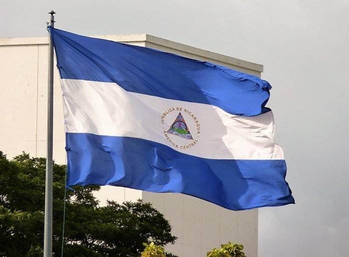
Situada en el centro geográfico del istmo centroamericano, la
República de Nicaragua cuenta con una población de naturaleza
multiétnica estimada en 6.3 millones de habitantes. Su capital
es Managua. Habitado por pueblos precolombinos, la costa del
Océano Pacífico y parte de la región central del actual territorio
de Nicaragua fue conquistado por los españoles, mientras que en
la costa Caribe se estableció el dominio colonial británico.
Nicaragua es un país volcánico y tropical, alojando en su interior
dos grandes lagos: el Lago Xolotlán y el Lago Cocibolca o «Gran
Lago de Nicaragua». Su privilegiada localización hace del país un
albergue de vasta biodiversidad. El español es la lengua oficial,
aunque también son reconocidas las lenguas de los pueblos indígenas
originarios como el inglés criollo nicaragüense, misquito, sumu o
sumo, mayagna, garífuna y rama. La religión es una parte importante
de la cultura nicaragüense, siendo el catolicismo la denominación
religiosa predominante, seguida por el protestantismo.
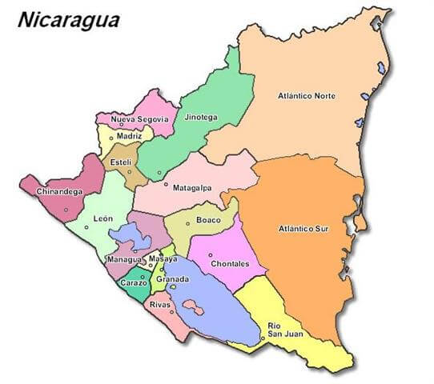
Nicaragua posee 130,373 km²
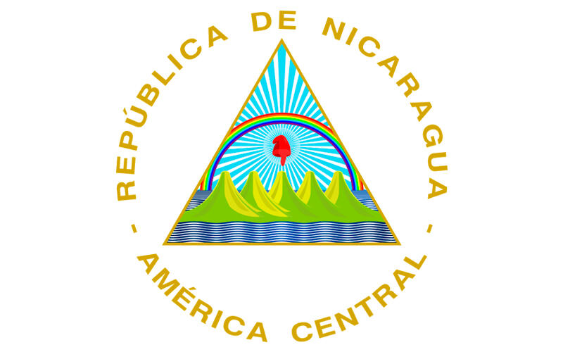
Escudo Nacional
El Escudo de Nicaragua fue creado, junto con la actual Bandera de Nicaragua, mediante el Decreto Legislativo del 5 de septiembre de 1908.
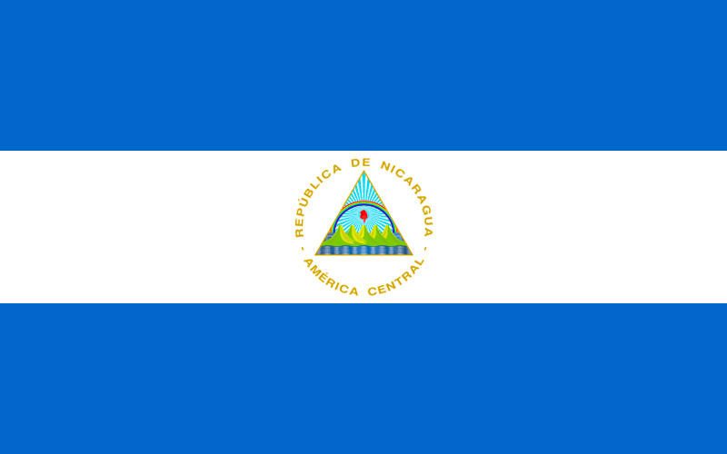
Bandera Nacional
La Bandera Nicaragüense tiene tres franjas horizontales (dos azules, arriba y abajo) con el escudo nacional en el centro, en la franja blanca. La franja blanca del Pabellón Nacional representa el territorio de la nación y simboliza la pureza de Nicaragua.
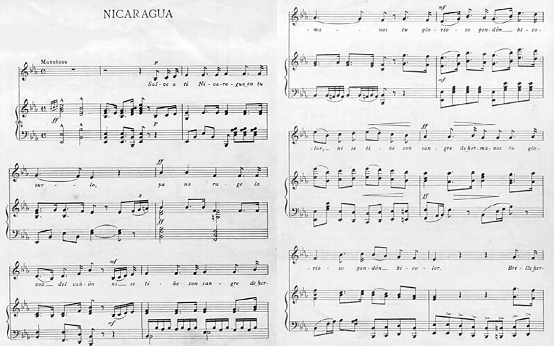
Himno Nacional
"Salve a ti "es el himno nacional de Nicaragua y constituye uno de los símbolos patrios oficiales de la nación nicaragüense.
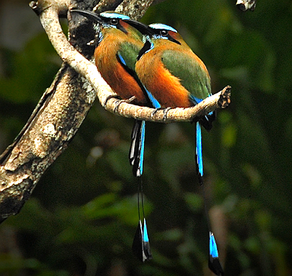
Ave Nacional
Se dedara por Decreto No. 1891, publicado en La Gaceta, Diario Oficial No. 194, del 27 de agosto de 1971, que es el Guardabarranco, el ave nacional de Nicaragua.
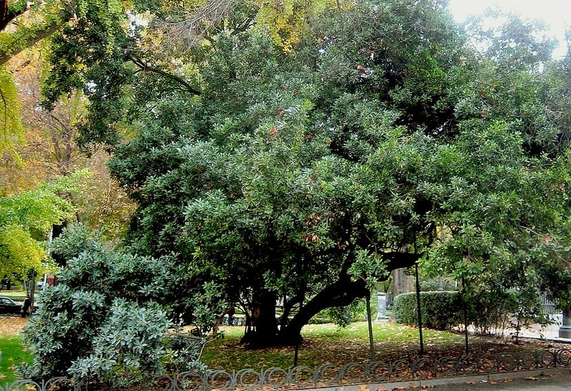
Árbol Nacional
El madroño es el Árbol Nacional de Nicaragua desde 1971. En La Gaceta, Diario Oficial de la República de Nicaragua, número 194, aparece reproducido el Decreto Legislativo No. 1891 por el cual se declara al madroño Árbol Nacional de Nicaragua.
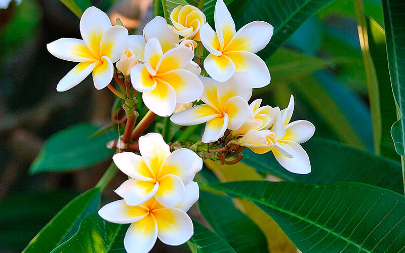
Flor Nacional
La Flor nacional de Nicaragua es el Sacuanjoche, y tiene un símbolo de inmortalidad para varias culturas; porque se usa en uniones matrimoniales representando la fuerza y el amor espirítual.
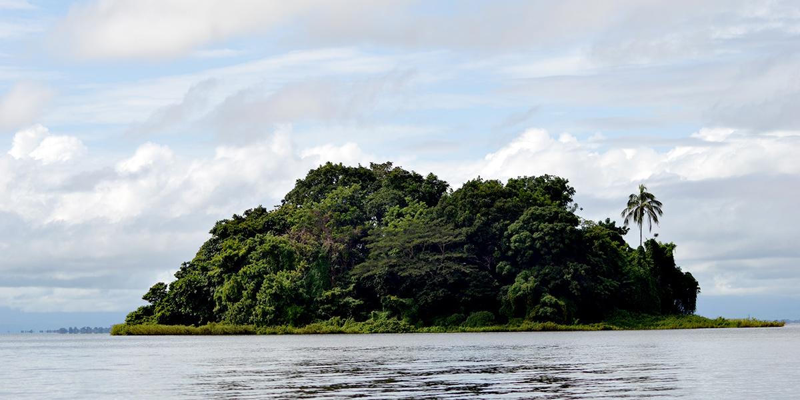
Archipiélago de Solentiname
El Archipiélago de Solentiname1 es un grupo de 36 islas e islotes de varios tamaños con una superficie de tierra firme de 4.020 hectáreas y su elevación oscila entre los 30 y 250 metros sobre el nivel del mar.
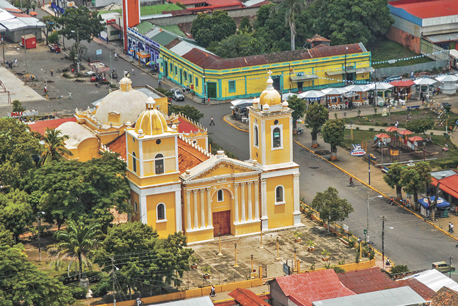
Chinandega
Chinandega es un municipio y una ciudad de la República de Nicaragua, capital del departamento de Chinandega.
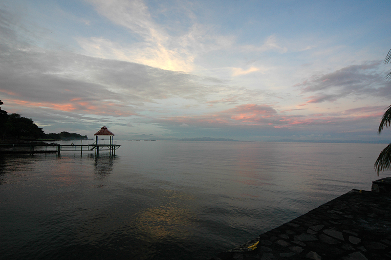
Lago Cocibolca
El lago Cocibolca o Gran Lago de Nicaragua es un lago de agua dulce situado en Nicaragua. Tiene una extensión de 8,264 km², siendo el mayor de América Central.

Isla de Ometepe
Ometepe es una isla en el vasto lago de Nicaragua, al suroeste de Nicaragua. Es conocida por sus volcanes gemelos. El volcán activo Concepción está en el norte de la isla.
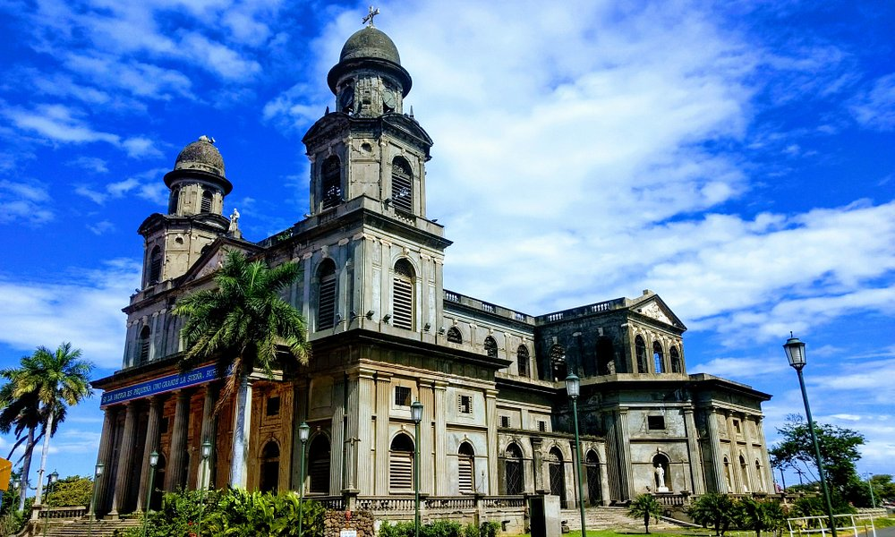
Managua
Managua se ubica en la costa sur del lago de Managua y es la capital de Nicaragua. Su catedral, solo el exterior desde un terremoto de 1972, se ubica en la Plaza de la Revolución.
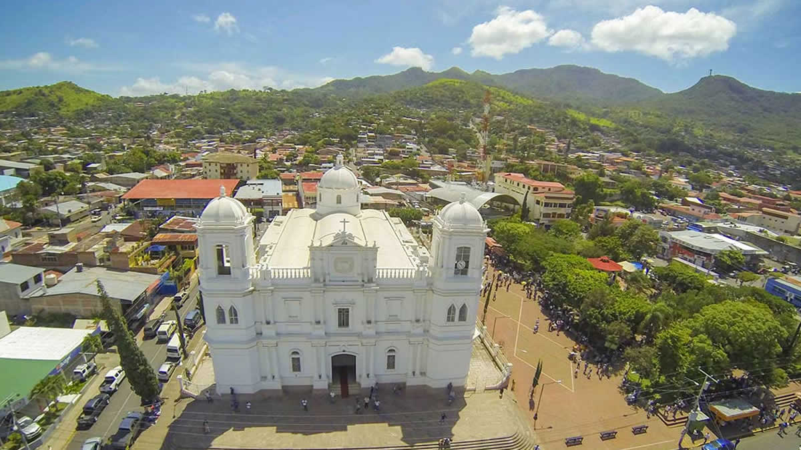
Matagalpa
Matagalpa es un municipio y una ciudad de la República de Nicaragua, cabecera del departamento de Matagalpa.